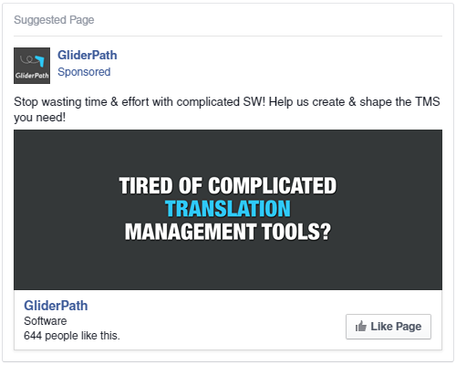
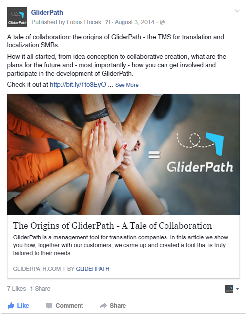

Lubos Hricak
wrote on
July 16, 2015
If you are building product from scratch while funding its development via pre-selling, you will surely come to the point that you exhaust your email list or you are not pre-selling fast enough. We’ve been there too! While building GliderPath, our SaaS application for translation and localization project managers, we came to the point when contacting prospects via email simply became too much work. You had to gain trust and build relationship with potential customer in order to pre-sell and the sales cycle stretches for too long.
When you get to that point, you have to find an alternative channel to find customers. That’s why we moved to Facebook and tried its advertising platform in order to close more sales and speed up the process. Since there may be lot of you who are trying to build products from scratch or are looking for other ways to access customers, I put together this article describing, what we did, how we did it and also why we went through some steps.
Identifying Pain Points and Validating via Email
First, let me just give you quick overview of what’s GliderPath and how it came to be. GliderPath is a translation management system, helping small and medium sized translation companies to streamline their processes. It’s a product of an idea extraction, a process during which we interviewed over 200 business owners in order to identify pain points in their businesses. Pain points which are painful enough, they would pay us to create a solution in order to remove these pains from their life.
Listening to 200 business owners gave us a solid idea of their pains.
Asking them what would help them to remove those pains, helped us to understand how the solution should look like.
And asking them for money to build such a solution gave us group of people ready to invest. This also validated our idea, that such a solution we are about to create is not only needed but people are willing to pay upfront. How cool is that!
Up until this point it was all about emails. We’ve send tons of emails, got rejected several times but also connected with some awesome people, some of them became our customers.
However the disadvantage of cold emailing is that sales cycle is a bit long. Still, you are sending emails to people who never heard of you or your product and even if the product may help them, it takes time to build trust.
How We Got Over 5000% of Return On Investment with Facebook Ads
At that point we tried Facebook ads to attract more business owners and bring more money to help us move forward with development. We not only tried. We’ve launched a campaign resulting in additional $7k being added to our business while spending only something less than $100. So what we did?
We Created a Facebook Fan Page
This may look obvious but the point here was just to create a Facebook page. If you are starting a business or validating an idea, you don’t need to spend weeks or months to create and add content to your business page. You need to just go for it fast, and make it short, sweet and to the point, without losing momentum.
Just create it (you can do it here), fill some additional information about your business, and add the logo and cover picture. That’s it! You may or may not want ask your friends to like your page to have some action going on in there. At the very beginning when we started our campaign, our Facebook business page looked a bit sad and empty. We had less than 20 fans and there was no content posted on that page. But we said “screw it, let’s do it“ anyway.
We had a page which was going to serve as part of the funnel. And we had to act quickly. Just note that you don’t even need a Fan page to validate an idea or to estimate market size. You can simply set up landing page and drive traffic to that page.
Know Your Buyer Persona
From now on, make this your motto. If you want to validate a business idea, you have to know whom that idea should help or make life easier. You not only have to know who your potential customer is but also what pains and struggles your potential customer has to go through on his/her day-to-day business.
Knowing, who your potential customer is will help you with targeting. Knowing his pains and struggles will help you with creating compelling message. You have to come up with something he or she will associate with.
With GliderPath we had this easier. We had our research done so we knew exactly what made people tick. We knew what they were struggling with and we also had something that eventually could remove that burden from their lives. Now it was just about getting the message in front of them.
Create a Compelling Message and Set the Funnel
Creating a message that our potential customers would identify with was the easiest part of the process. We already knew what pains trigger emotions as we spent hours and hours talking to business owners. The funnel was not set to directly drive people to our website. We set campaign to get likes to our website. This is one of the ads we used:

The ad itself doesn’t say much. It addresses the pain our prospects were experiencing while mentioning a possible solution. And, of course, we used a discount as a hook. People who clicked on it became fans and you could shoot them messages directly.
We didn’t want to send people directly to our website. Instead we created a post on our fan page describing our Early Adopter’s program in more detail. Also this post already contained a link to our website so people who were interested enough after first 2 rounds (ad + page post our fan page), had one more round to go on our website.

Why we did it this way?
Some people get hooked only for the discount. Some people are interested but not enough to make it to the website and while being sent directly to the website they wouldn’t probably apply for demo anyway.
Our idea was making it actually more difficult for potential customers. We wanted to disqualify all those who are not interested enough from those who were ready to become our Early Adopters. Eventually you may get less leads but if those leads are quality leads, it makes sense.
Also people booking a demo with us already knew what we are doing, they knew that we are building a product and they knew we were financing it by pre-selling. And they were also aware of all benefits available for them once they became Early Adopters. So once they booked a demo, we did not have to explain from scratch what we were all about.
The awkward part of cold emails and cold calls is when you explain who you are and what you are doing in order to get their attention. With our Facebook ads funnel, we completely skipped the awkwardness and went right down to business!
Now you have perfectly warm lead in front of you eager to know more about your product or service. Even if you are building the product from scratch. Just make sure that you have a form on every page of your website to apply for a demo or contact you. It happens that people check what you are doing first, they may check the pricing page as well so just make it easier for those who are ready to apply.
Try Fast, Fail Fast - Targeting, Adjusting and Results
As for targeting we were after people with specific interests. We also created a custom audience and uploaded emails of people we already contacted via our email campaigns but who did not respond. You never know if they don’t respond because they are not interested or because your message ended up in a spam folder. So including your already existing list is a good idea. All in all we were targeting slightly more than 2000 people with our ad.
It is important to note that the sample message I showed above was the final message we used. We were adjusting it every 2 days or so to get better results. You want to try and fail quickly so there is no need to leave the ad running for one week if it’s obvious after 1-2 days that is not working. The faster you fail, the faster you can move on to try the next thing until you succeed.
You can see how many clicks your ad is getting in Facebook Ads Reports. If people are not liking or clicking on your ad, adjust the message. Good thing is that on Facebook you can create several ads at no extra cost and test different picture or text. If people are clicking on your ad but they are not making it your website, adjust the post on you Facebook page. You can see how your posts are doing on your business page Insights. And finally, if people are making to your website, but you are not getting any bookings, then is something wrong with your landing page. The key is to test. You will hardly make at the first time. So test it until you get it right.
A Small Budget is not a Problem
The great part about Facebook ads is that you can do well even if your budget is small. We had our daily budget set at $3.50. Eventually we raised it to $5 when we got the message right but we still tried to keep it low cost. Initially we spent $115.55 on Facebook ads and landed 3 new clients worth $6k. We eventually added one more customer as a result of our Facebook campaign however this one didn’t book the demo right away. He noticed our ad, however he started looking for similar system only few weeks later. Knowing our name he finally got to us and eventually became a customer.
During the campaign we also got 12 bookings. That makes our cost per lead $9.63. You may think that 12 bookings over the 3 weeks it’s not a lot but all leads were hot and we eventually converted 25% (33% when counting one post campaign customer) of them into customers. The cost per acquisition goes somewhere $38.5 ($28.8).
If I compare it with our email campaign, that’s definitely better.
For our email campaigns we were paying our VA around $35 per 100 leads. The quality of the leads varied. Sometimes you won’t convert anybody out of those 100 you sent emails to, sometimes you got only 1 booking.
It is an interesting comparison. The biggest advantage I see in running Facebook ads comparing to cold emails, is the reduction in sales cycle.
When sending emails, it would take us at least 2 emails to get somebody on the phone and between 3 to 5 calls to make a deal if we convert.
When running ads, the shortest sales cycle was actually 2 calls. In average we needed 3 calls maximum to convert a lead into a client. It really makes difference if you qualify your leads prior to booking a demo. You are saving yourself and your potential customers lot of time.
Food for thought
While our Facebook campaign definitely had a success, if doing it today I would do few things differently.
First, install the Facebook remarketing pixel on your website so you can track visitors of your website and display them your ad later when they leave your website. If you do this you will be actively building audience from visitors of your site. Later you can promote a webinar for example to these people and eventually land some more pre-sales. You eventually will exhaust your targeting options, so by actively building your audience right from the start you are also building a list of people knowing your product.
Instead of driving people to you Facebook fan page and from there to our website I could probably also set a form with a series of questions to get to know more about the people who are applying and see whether they are good match for your product. You can drive traffic directly to this website and let people apply. This seems like a good idea however it makes also sense in case you want to validate your idea. You make people go through series of questions and you are also building a list of potential beta testers or early adopters.
It’s really up to you and possibilities Facebook is offering to you with it’s targeting are seemingly endless.
Just make sure, you don’t spend too much time setting up your Facebook business page or your ad. Just set it up quickly to see whether it will work for you or not. And if not, adjust it or move to another channel. Remember, if you are about to fail, you want to fail quickly.